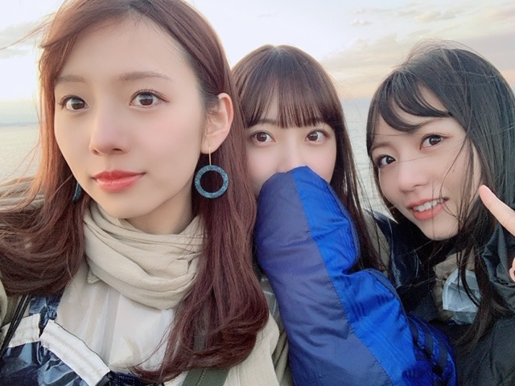
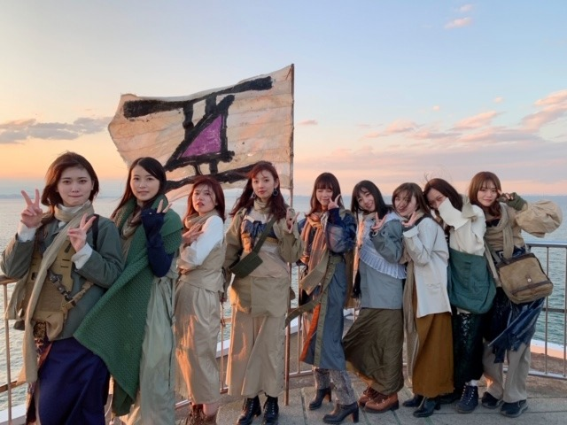
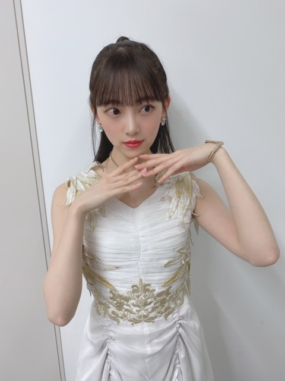

2020/0309Mon#アナスターシャ
2期生MVの
アナスターシャ が公開されました!
もうみなさんは見てくださいましたか?
監督は伊藤衆人監督です☺︎
朝からずっとみんなと一緒にいて楽しかったなぁ
塔を登るシーン、実はめちゃくちゃ寒くて
ウワアアアアアってみんなで叫びながら登っていました!
寒かった~
でも良いシーンになりました!
完成したMVはたまたまバスラの時に名古屋のホテルで純奈、日奈子、絢音、みり愛と一緒にいたのでみんなで観たのですがその時はみんな泣くのを我慢していて。笑
各々、自分の部屋に戻って観て泣きました。笑
ストーリーにいろんな意味が込められています。
大切な大切な曲をいただきました。
たくさん観てください!


#アナスターシャ
#アナスターシャ考察
で是非感想つぶやいてください✨

ではは
2020/03/09 18:54
コメント(378)
未央奈さんブログ更新ありがとうございます！
アナスターシャのMVと曲とても感動し、大好きになりました！
未央奈さんいつも応援しています！
体調には十分気をつけてくださいね〜
アナスターシャのMVと曲とても感動し、大好きになりました！
未央奈さんいつも応援しています！
体調には十分気をつけてくださいね〜
未央奈～～～～～～～～～～～～～～～～～～。更新有り難うござます。アナスターシャのMV観ましたよ。なんか、衣装にラジカセがよくわからんけど、それが逆に良かったりして。まだ、見てみます。
アナスターシャ最高です!
アナスターシャ！みたみた！
めちゃいいよー！！！
2期生って素敵。
しゅーとさんすごい、ほんと。
裏話きたぁぁ！！
千葉の海沿いだもんね、寒そ。笑
ほんと、良いシーンいっぱい。
どのシーンも良いMVってすごい。
監督の仕掛けとみおちゃん達2期生の想いがあってこそだね
(๑･̑◡･̑๑)
その話は、、もらい泣きしちゃうよ、、
まさか名古屋でそんなことが起きてるとは。。
2期生すきです。
これからも前を向いてがんばってほしいし、
夢が叶う瞬間を見せてほしい
その姿をみてこっちもがんばれるから☺︎
うん。たくさんたくさん観るね〜！
大切な曲。大切な仲間✨
みおちゃん、大好きよー！応援してますっ！
感想？考察？つぶやいたよーん♪
MVみるにつれてどんどんどんどん2期生が好きになっちゃった。
みおちゃんの想い、勝手に考察したわ、ごめっ！
しあわせの保護色も良い曲。
写真ありがと。
かーわいっ。✌️
でははははは
めちゃいいよー！！！
2期生って素敵。
しゅーとさんすごい、ほんと。
裏話きたぁぁ！！
千葉の海沿いだもんね、寒そ。笑
ほんと、良いシーンいっぱい。
どのシーンも良いMVってすごい。
監督の仕掛けとみおちゃん達2期生の想いがあってこそだね
(๑･̑◡･̑๑)
その話は、、もらい泣きしちゃうよ、、
まさか名古屋でそんなことが起きてるとは。。
2期生すきです。
これからも前を向いてがんばってほしいし、
夢が叶う瞬間を見せてほしい
その姿をみてこっちもがんばれるから☺︎
うん。たくさんたくさん観るね〜！
大切な曲。大切な仲間✨
みおちゃん、大好きよー！応援してますっ！
感想？考察？つぶやいたよーん♪
MVみるにつれてどんどんどんどん2期生が好きになっちゃった。
みおちゃんの想い、勝手に考察したわ、ごめっ！
しあわせの保護色も良い曲。
写真ありがと。
かーわいっ。✌️
でははははは
未央奈ブログ更新ありがとう！
アナスターシャMV何十回も見たよ。見るたびに最初のみんなと一緒に塔を作る未央奈から、一人きりでバレッタを握る未央奈でもう泣いちゃう。
2期生の辿って来た道のりを考えさせるから、2期生みんなでMV撮ってることさえ感動しちゃう。
本当に良い曲だし、良いMVだし、なんかすごいものが生まれたと思う。なんかありがとう。
Mステの写真も可愛い！
では！
アナスターシャMV何十回も見たよ。見るたびに最初のみんなと一緒に塔を作る未央奈から、一人きりでバレッタを握る未央奈でもう泣いちゃう。
2期生の辿って来た道のりを考えさせるから、2期生みんなでMV撮ってることさえ感動しちゃう。
本当に良い曲だし、良いMVだし、なんかすごいものが生まれたと思う。なんかありがとう。
Mステの写真も可愛い！
では！
あナスターシャ、キャーキャーいいながら見たよ♡
未央奈ちゃんのオーラや表情が凄すぎて、女優も向いてる！って心から思いました！
毎回載せてくれる画像が可愛すぎて可愛すぎて。お人形さんですか？わたしの写真のフォルダは未央奈ちゃんでいっぱいだよぉ。大好き！
未央奈ちゃんのオーラや表情が凄すぎて、女優も向いてる！って心から思いました！
毎回載せてくれる画像が可愛すぎて可愛すぎて。お人形さんですか？わたしの写真のフォルダは未央奈ちゃんでいっぱいだよぉ。大好き！
お疲れ様です
いつも未央奈大好き
いつも未央奈大好き
こんばんは
MVめっちゃ感動して涙が止まりませんでした…これからも頑張って下さい！
しかし可愛いい。
アナスターシャいい！
好き。2期の色！
好き。2期の色！
ほりっぴ～、ナンチです♪
ほりっぴ～好きです
アナスターシャ
めっちゃMVがエモい
二期生の旗の下
いつまでも集って欲しいと思ってるよ
二期生史上最高の曲をありがとう～
ほりっぴ～好きです
アナスターシャ
めっちゃMVがエモい
二期生の旗の下
いつまでも集って欲しいと思ってるよ
二期生史上最高の曲をありがとう～
みおちゃんブログありがとう！
アナスターシャほんとにいい曲〜！！曲もMVも素敵！
考察頑張るね！！
Mステのハーフアップ、めちゃくちゃ可愛い！すごく似合ってるよ〜♡
アナスターシャほんとにいい曲〜！！曲もMVも素敵！
考察頑張るね！！
Mステのハーフアップ、めちゃくちゃ可愛い！すごく似合ってるよ〜♡
ショールーム、めっちゃ良かったです！！
最初から最後までずっと感動しっぱなしでした、、
セットリストも、MCも、全部がとっても良かった。今まで見てきた中で一番こころに残るライブでした。
でも、いつかこの目でみんなの前で2期生ライブが開催されるのを見たいです。。絶対に
アナスターシャのMV見ました！！色々なところで2期生の歴史が散りばめられていて、見つける度に胸が高鳴りました。間違いなく、この曲、MVは素晴らしいものです。
ゆっくりと咲く花も、とっても感動しました。思いが詰まっていて、涙が流れ落ちました。音源化、MV、できたら嬉しいですね！
時間は有限。だからこそ、今この瞬間を大切にしたいですね。
振り返ったときに、この瞬間が無駄ではなかったと思えるように、、これからもずっと応援します！！
最初から最後までずっと感動しっぱなしでした、、
セットリストも、MCも、全部がとっても良かった。今まで見てきた中で一番こころに残るライブでした。
でも、いつかこの目でみんなの前で2期生ライブが開催されるのを見たいです。。絶対に
アナスターシャのMV見ました！！色々なところで2期生の歴史が散りばめられていて、見つける度に胸が高鳴りました。間違いなく、この曲、MVは素晴らしいものです。
ゆっくりと咲く花も、とっても感動しました。思いが詰まっていて、涙が流れ落ちました。音源化、MV、できたら嬉しいですね！
時間は有限。だからこそ、今この瞬間を大切にしたいですね。
振り返ったときに、この瞬間が無駄ではなかったと思えるように、、これからもずっと応援します！！
みおなちゃん更新ありがとう╰(*´︶`*)╯♡
『アナスターシャ』のMV観たよ(*´꒳`*)
ストーリーも含めて感動しました（；＿；）
何回も観るね(о´∀`о)
『アナスターシャ』のMV観たよ(*´꒳`*)
ストーリーも含めて感動しました（；＿；）
何回も観るね(о´∀`о)
ブログ更新ありがとう！
アナスターシャほんとにいい曲すぎてMVもすごいいろんなことが詰まっててここ最近毎日4〜5回ずつはMV見てるよ！
これからも未央奈、そして2期生のこと応援してます！！
アナスターシャほんとにいい曲すぎてMVもすごいいろんなことが詰まっててここ最近毎日4〜5回ずつはMV見てるよ！
これからも未央奈、そして2期生のこと応援してます！！
アナスターシャ、見るね！
アナスターシャ
とてつもない神曲が生まれましたね^_^
そして
ゆっくりと咲く花
表題曲レベルです
また聴きたい
とてつもない神曲が生まれましたね^_^
そして
ゆっくりと咲く花
表題曲レベルです
また聴きたい
未央奈～ こんにちは
連日のブログ更新ありがとうございます。
７日(土)のライブの興奮が冷めやらぬまま、とにかく昨日一日は、「アナスターシャ」の話題で持ちきりでしたね。
このＭＶについて知れば知るほど深い意味があり、そこに７年間の集大成が伝わってくることが分かりました。まさにともに歩んできた伊藤衆人監督の思いと二期ちゃんたちの思いが詰まった作品なんですね。細かいところまで工夫され、驚くばかりの精密さがありました。
それだからこそ、完成した時のメンバーの思いが伝わってきました。
「ゆっくりと咲く花」同様、ずっとずっと大切にしていってください。もちろん、応援していますよ。
未央奈のこのところのブログ更新の多さ、お忙しいにも関わらず、頭の下がる思いです。私たちのためにも本当にありがとうございます。７５５の配信もあるし、おかげで「近くに」感じることができるのは何よりのことです。それは未央奈がデビュー当時からずっとこのブログを大切にしている証拠であり、ずっと根底に流れている未央奈らしさだと思います。
これって凄いことですよね。未央奈にとっては当たり前かもしれないけど、私たちファンにとっては、ホントありがたいことです。そういう意味では、かなりんというさらに上を行く先輩がいますが、このブログを通してサンエトの「一番近い」という意味が生きているかもしれません。
というわけで、これからもよろしくお願いしますね。
連日のブログ更新ありがとうございます。
７日(土)のライブの興奮が冷めやらぬまま、とにかく昨日一日は、「アナスターシャ」の話題で持ちきりでしたね。
このＭＶについて知れば知るほど深い意味があり、そこに７年間の集大成が伝わってくることが分かりました。まさにともに歩んできた伊藤衆人監督の思いと二期ちゃんたちの思いが詰まった作品なんですね。細かいところまで工夫され、驚くばかりの精密さがありました。
それだからこそ、完成した時のメンバーの思いが伝わってきました。
「ゆっくりと咲く花」同様、ずっとずっと大切にしていってください。もちろん、応援していますよ。
未央奈のこのところのブログ更新の多さ、お忙しいにも関わらず、頭の下がる思いです。私たちのためにも本当にありがとうございます。７５５の配信もあるし、おかげで「近くに」感じることができるのは何よりのことです。それは未央奈がデビュー当時からずっとこのブログを大切にしている証拠であり、ずっと根底に流れている未央奈らしさだと思います。
これって凄いことですよね。未央奈にとっては当たり前かもしれないけど、私たちファンにとっては、ホントありがたいことです。そういう意味では、かなりんというさらに上を行く先輩がいますが、このブログを通してサンエトの「一番近い」という意味が生きているかもしれません。
というわけで、これからもよろしくお願いしますね。
アナスターシャで涙腺崩壊 ﾋﾟｴﾝ
未央奈さんこんばんは♪
MV視たよ(〃^ー^〃)
本当に素敵な曲だし、素敵なMVだね(*^^*)
衣装も似合う♪
明日も未央奈さんにHAPPYを
お休みなさい(^-^ゞ
MV視たよ(〃^ー^〃)
本当に素敵な曲だし、素敵なMVだね(*^^*)
衣装も似合う♪
明日も未央奈さんにHAPPYを
お休みなさい(^-^ゞ
みおな
真夜中になりますが今日もお疲れ様です
2期生ライブお疲れ様でした
配信見ました
中止は残念だったけど、42万人も見てる人がいたから、たくさんの人に伝える形で出来たから、これはこれでよかったです
スカウトマンが好きだから披露してて嬉しかったです
久々にほりっぴーも見れたから、良かったです
また見れるとは思わずマジテンション爆上げーって感じでした（マジウケる笑）
アナスターシャの初公開も観ました
なぜだか、油断すると涙が出てくる不思議な感じでした
サビの曲調はカッコいいです
タイプBも予約したので、たくさん聴くね！
ゆっくりと咲く花もよかったです
まさかもう一曲あるとは思わず、これがサプライズかって思いました
この曲も今回のシングルに特典で入るのか分からないけど、CDとかになったら、たくさん聴きます
ライブで生披露したかったと思うけど、またいつか時が来たら、ライブの開催を待ってます
次こそ抽選に当たって行きます
みおなも今は体調に気を付けてね！
ありがとうございました
真夜中になりますが今日もお疲れ様です
2期生ライブお疲れ様でした
配信見ました
中止は残念だったけど、42万人も見てる人がいたから、たくさんの人に伝える形で出来たから、これはこれでよかったです
スカウトマンが好きだから披露してて嬉しかったです
久々にほりっぴーも見れたから、良かったです
また見れるとは思わずマジテンション爆上げーって感じでした（マジウケる笑）
アナスターシャの初公開も観ました
なぜだか、油断すると涙が出てくる不思議な感じでした
サビの曲調はカッコいいです
タイプBも予約したので、たくさん聴くね！
ゆっくりと咲く花もよかったです
まさかもう一曲あるとは思わず、これがサプライズかって思いました
この曲も今回のシングルに特典で入るのか分からないけど、CDとかになったら、たくさん聴きます
ライブで生披露したかったと思うけど、またいつか時が来たら、ライブの開催を待ってます
次こそ抽選に当たって行きます
みおなも今は体調に気を付けてね！
ありがとうございました
アナスターシャのMVを拝見して感動しました。
二期生お一人お一人がとてもカッコよかったです！改めて二期生の強さを感じました。本当に二期生大好きです！！
二期生お一人お一人がとてもカッコよかったです！改めて二期生の強さを感じました。本当に二期生大好きです！！
アナスターシャとっても良いですね～
みんなで北野さんを置いて行かずに進んだところで「アナスターシャ」って出るところにぐっときます
曲もすごく好きです！
みんなで北野さんを置いて行かずに進んだところで「アナスターシャ」って出るところにぐっときます
曲もすごく好きです！
未央奈ちゃんブログ更新ありがとう！
あやめちゃんとさくらちゃんと同じ愛知県出身の覇王です！
アナスターシャのミュージック・ビデオ見たよ！
みんな可愛くて、とてもいい曲だったよ！
2期生の歴史がたくさん詰まっていて、とてもよかったよ！
これからも頑張ってね！
応援してるよ！
あやめちゃんとさくらちゃんと同じ愛知県出身の覇王です！
アナスターシャのミュージック・ビデオ見たよ！
みんな可愛くて、とてもいい曲だったよ！
2期生の歴史がたくさん詰まっていて、とてもよかったよ！
これからも頑張ってね！
応援してるよ！
映画や音楽もうぶやみーはーというかいろいろありますよね・・・！？
ＭＶ考察というか映画用語になりますよ！？
いろいろとメタファーがあったり、何かストーリーのマクガフィンになっていたり、いろいろとケレンがあったり、するんですか！？
さてと寝る前にスター・ウォーズエピソード９のガイドブックと惑星ガイドブックとスター・ウォーズサーガの歴史書を読んでから寝ようかな・・・苦笑
それでは今週も体調に気をつけて頑張りましょう・・・。
ＭＶ考察というか映画用語になりますよ！？
いろいろとメタファーがあったり、何かストーリーのマクガフィンになっていたり、いろいろとケレンがあったり、するんですか！？
さてと寝る前にスター・ウォーズエピソード９のガイドブックと惑星ガイドブックとスター・ウォーズサーガの歴史書を読んでから寝ようかな・・・苦笑
それでは今週も体調に気をつけて頑張りましょう・・・。
堀さん、ブログ更新ありがとうございます。
アナスターシャ、PV何度も観てしまいます。
他の方の考察を読んでからまた見返すとまた泣けてきます。
2期生が今まで歩んできた道を感じられるPVで、素敵な曲だと思います。
多分、初めてこんなにPVを見返していると思います。
2期生だからこそ感動できる曲なのかなと、琴子さんの卒業は残念ですが、2期生ライブにかりんちゃんと伊織さんが来てくれたように、2期生の絆はずっと続くのだろうと思うのでこれからも2期生を応援していきたいと思いました。
本当に素敵な曲と、素敵なライブをありがとうございました。
今度はライブ会場で2期生ライブが開催される事を祈っています。
アナスターシャ、PV何度も観てしまいます。
他の方の考察を読んでからまた見返すとまた泣けてきます。
2期生が今まで歩んできた道を感じられるPVで、素敵な曲だと思います。
多分、初めてこんなにPVを見返していると思います。
2期生だからこそ感動できる曲なのかなと、琴子さんの卒業は残念ですが、2期生ライブにかりんちゃんと伊織さんが来てくれたように、2期生の絆はずっと続くのだろうと思うのでこれからも2期生を応援していきたいと思いました。
本当に素敵な曲と、素敵なライブをありがとうございました。
今度はライブ会場で2期生ライブが開催される事を祈っています。
未央奈ブログ更新ありがとう
前日の2期ライブを見ました，お疲れ様です
本当に素晴らしい，何度も泣いた
前日の2期ライブを見ました，お疲れ様です
本当に素晴らしい，何度も泣いた
写真3枚どれもとても可愛いです^ ^
堀さん、こんばんは。
寒さと闘いながら塔登るところはいいシーンですね。
旗立ててる集合写真は空がどこまでも綺麗で本当に良い写真です。
これまでの活動を作品にしてもらうのって、それに価値が有ったっていうメッセージなんですよね。素敵なMVで本当に良かったです。
それでアナスターシャに対する人の考察見てたら超面白かったです。2割くらいしか僕は気付いてませんでした。秒数とか振りとか亜とか相当込められてて凄いです。更に凄いと僕が思ったのが、
twitterでのファンの考察が積みあがっていくことでMVの凄さが完成するっていうところです。ファンありきで完成するっていうのがアイドルそのもので凄すぎます。
あと僕は旗が現実で何を意味するのか考えてたんですけど、2期がグループに欠かせない存在になるとか、このアナスターシャのMVが完成するとか色々有るとは思いますけど、結局は2期生ライブが開催されることなんじゃないかって思いました。いつか旗が立てられたとき、MVみたくばらばらの個性を持った集団が一つの目標に向かったときの強さを見られる日を心待ちにしてます。
3枚目の写真は美しすぎるラーメン屋みたいですね。明日の昼食はラーメンにします。
そういえば先日のモヤモヤさまぁ～ずで上野にある岐阜のアンテナショップが出てたんですけど、店出たあとの大竹さんが岐阜の響きを気に入ったように「行きたくなるね。岐阜。」って言っててレコメンの堀さんを思い出しました。
寒さと闘いながら塔登るところはいいシーンですね。
旗立ててる集合写真は空がどこまでも綺麗で本当に良い写真です。
これまでの活動を作品にしてもらうのって、それに価値が有ったっていうメッセージなんですよね。素敵なMVで本当に良かったです。
それでアナスターシャに対する人の考察見てたら超面白かったです。2割くらいしか僕は気付いてませんでした。秒数とか振りとか亜とか相当込められてて凄いです。更に凄いと僕が思ったのが、
twitterでのファンの考察が積みあがっていくことでMVの凄さが完成するっていうところです。ファンありきで完成するっていうのがアイドルそのもので凄すぎます。
あと僕は旗が現実で何を意味するのか考えてたんですけど、2期がグループに欠かせない存在になるとか、このアナスターシャのMVが完成するとか色々有るとは思いますけど、結局は2期生ライブが開催されることなんじゃないかって思いました。いつか旗が立てられたとき、MVみたくばらばらの個性を持った集団が一つの目標に向かったときの強さを見られる日を心待ちにしてます。
3枚目の写真は美しすぎるラーメン屋みたいですね。明日の昼食はラーメンにします。
そういえば先日のモヤモヤさまぁ～ずで上野にある岐阜のアンテナショップが出てたんですけど、店出たあとの大竹さんが岐阜の響きを気に入ったように「行きたくなるね。岐阜。」って言っててレコメンの堀さんを思い出しました。
みおな、こんばんは。更新ありがとう！近況報告ありがとうございます。新曲発売日楽しみにしてます！ では、毎日みおなに良いこと沢山ありますように！ おやすみおな！！
おはようございます☺
何回目か分からんけど
SHOWROOM２期生ライブお疲れさまでした☺
42万人の中の1人としてライブ見れたらことは乃木坂ファンとしても嬉しいです☺
２期生新曲も聴けたし良かったです。
しあわせの保護色の発売も楽しみやんね✨
あと、かりんちゃん、いおりちゃん来てくれたんは嬉しいね☺
それもいわゆる絆✨
一期一会✨
そして２期生も更なる飛躍頑張ろう！
勿論チーム乃木坂としてもひとつとなってね☺
ではではまたね☺
体調気をつけてくださいな✨
ほなね、堀ちゃん☺
頑張りや✨
何回目か分からんけど
SHOWROOM２期生ライブお疲れさまでした☺
42万人の中の1人としてライブ見れたらことは乃木坂ファンとしても嬉しいです☺
２期生新曲も聴けたし良かったです。
しあわせの保護色の発売も楽しみやんね✨
あと、かりんちゃん、いおりちゃん来てくれたんは嬉しいね☺
それもいわゆる絆✨
一期一会✨
そして２期生も更なる飛躍頑張ろう！
勿論チーム乃木坂としてもひとつとなってね☺
ではではまたね☺
体調気をつけてくださいな✨
ほなね、堀ちゃん☺
頑張りや✨
みおなちゃんブログ更新ありがとー！
アナスターシャほんとに良かった
二期生みんな魅力ありありでもう感動
これからどんどん上り坂になることを祈ってます
アナスターシャほんとに良かった
二期生みんな魅力ありありでもう感動
これからどんどん上り坂になることを祈ってます
みんなノリが良くて最高だな ！！
未央奈美人だにゃぁ！
未央奈美人だにゃぁ！
アナスターシャ初めて聴いてすぐ大好きな曲になりました(^^)
2期生やっぱり最高だね！！
2期生やっぱり最高だね！！
2期生ライブ配信お疲れ様でした。しっかり見てましたよ～
アナスターシャ、ゆっくりと咲く花の時は涙が出て止まらなかったです…良い楽曲なんでたくさん聴きたいと思いますね。
乃木坂好きになった日は浅い自分なんですが、2期生が大好きです。これからも応援していきたいと思うので、次は目の前で2期生全員そろってのライブを見れるのとを期待して待ちたいと思います。
アナスターシャ、ゆっくりと咲く花の時は涙が出て止まらなかったです…良い楽曲なんでたくさん聴きたいと思いますね。
乃木坂好きになった日は浅い自分なんですが、2期生が大好きです。これからも応援していきたいと思うので、次は目の前で2期生全員そろってのライブを見れるのとを期待して待ちたいと思います。
堀ちゃん、ブログ更新ありがとう！
アナスターシャのMV何回も見たよ。
2期生の歴史を振り返るようなストーリー性のあるMVだね
正規メンバーに昇格した順番に皆合流する。グッときました。
やあっと2期生を代表する曲ができた気がするよ。嬉しいです。
今日のショットはMステのときのやつだね。
かわいいです、最高です。
堀ちゃんは髪型なんでも似合うと思います。
では〜
アナスターシャのMV何回も見たよ。
2期生の歴史を振り返るようなストーリー性のあるMVだね
正規メンバーに昇格した順番に皆合流する。グッときました。
やあっと2期生を代表する曲ができた気がするよ。嬉しいです。
今日のショットはMステのときのやつだね。
かわいいです、最高です。
堀ちゃんは髪型なんでも似合うと思います。
では〜
みおなちゃん、大好きです
未央奈さん、更新ありがとうございます！
アナスターシャ見ました‼みんなとても可愛くて、
ダンスも良くて、衣装はかっこ良くて、歌声は
もう、素晴らしくて、一瞬で好き、いや、大好きに
なりました♪2期生にしか出せない魅力というか
なんというか、もうとにかくすっごく良かったです！
またコメントします♪応援してます！
アナスターシャ見ました‼みんなとても可愛くて、
ダンスも良くて、衣装はかっこ良くて、歌声は
もう、素晴らしくて、一瞬で好き、いや、大好きに
なりました♪2期生にしか出せない魅力というか
なんというか、もうとにかくすっごく良かったです！
またコメントします♪応援してます！
アナスターシャ最高でした
いつかライブで聞けること楽しみにしてます
いつかライブで聞けること楽しみにしてます
幻の２期生ライブすごくよかったです。
こんな状況の中で配信という形で届けてくれて本当にありがとう。
アナスターシャ、ゆっくりと咲く花はどちらも２期生が歌うことに意味がある曲だと思いました。
アナスターシャのMVは２期生の歩んできたストーリーって感じでグッときました。
ブログもたくさん更新してくれて推しとしてすごく嬉しいです。
ありがとう。
こんな状況の中で配信という形で届けてくれて本当にありがとう。
アナスターシャ、ゆっくりと咲く花はどちらも２期生が歌うことに意味がある曲だと思いました。
アナスターシャのMVは２期生の歩んできたストーリーって感じでグッときました。
ブログもたくさん更新してくれて推しとしてすごく嬉しいです。
ありがとう。
アナスターシャのMV
めっちゃいいです！
2期生の歴史がギュッと詰まってる感じで
想像を膨らませて観てます
歌詞もすごくいいです。
100%聞き取れてるかは分からんけど
すごく好きな世界観です
ていうか、堀未央奈さん最近やたら可愛くなってませんか？
いや、前から知ってたんですけど( )
)
大人っぽくなったというか
綺麗になったというか
色気が出てきたというか
とても輝いて見えます。
なので写真フォルダが
えらいことなってきてます
写真集楽しみにしてますね！！
花粉やらなんやらに気をつけてください！
それでは
めっちゃいいです！
2期生の歴史がギュッと詰まってる感じで
想像を膨らませて観てます
歌詞もすごくいいです。
100%聞き取れてるかは分からんけど
すごく好きな世界観です
ていうか、堀未央奈さん最近やたら可愛くなってませんか？
いや、前から知ってたんですけど(
大人っぽくなったというか
綺麗になったというか
色気が出てきたというか
とても輝いて見えます。
なので写真フォルダが
えらいことなってきてます
写真集楽しみにしてますね！！
花粉やらなんやらに気をつけてください！
それでは
堀未央奈ちゃん おはようございます！！ (^_^)
さて、
乃木坂46「アナスターシャ」MV、2期生が旗を掲げて冒険
※by ナタリー
2月上旬に千葉県富津市で撮影が行われたMVは
「2期生の旗を掲げる」をテーマにした冒険物語がコンセプト。
3月いっぱいで卒業する
佐々木琴子にとっては最後のMVとなり、
撮影終了後は2期生メンバー全員が感極まって涙し、
共に約7年間活動してきた佐々木をねぎらったという。
※by オリコンミュージック
━━━━━━━━━━━━━━━━━━━━
showroom ２期生ライブ で検索して、
♪アナスターシャ を 聴きました！！ (^^♪
↑↑英語と違う N&Rが……
いい曲だと思います！！
堀ちゃんは センターだね！！ (^_-)-☆
お元気で 益々 ご活躍下さい！！ (^。^)y-.。o○
ps:3/16（月） CDTVスペシャル！卒業ソング音楽祭2020
録画予約して有ります！！ (^^♪
※Mステも 一応 録画予約。内容は不明。
さて、
乃木坂46「アナスターシャ」MV、2期生が旗を掲げて冒険
※by ナタリー
2月上旬に千葉県富津市で撮影が行われたMVは
「2期生の旗を掲げる」をテーマにした冒険物語がコンセプト。
3月いっぱいで卒業する
佐々木琴子にとっては最後のMVとなり、
撮影終了後は2期生メンバー全員が感極まって涙し、
共に約7年間活動してきた佐々木をねぎらったという。
※by オリコンミュージック
━━━━━━━━━━━━━━━━━━━━
showroom ２期生ライブ で検索して、
♪アナスターシャ を 聴きました！！ (^^♪
↑↑英語と違う N&Rが……
いい曲だと思います！！
堀ちゃんは センターだね！！ (^_-)-☆
お元気で 益々 ご活躍下さい！！ (^。^)y-.。o○
ps:3/16（月） CDTVスペシャル！卒業ソング音楽祭2020
録画予約して有ります！！ (^^♪
※Mステも 一応 録画予約。内容は不明。
アナスターシャ見ました‼️
MVの所々に２期生の歴史が感じられました
アナスターシャという曲名も復活した女という意味だったので２期生にぴったりないい楽曲だと思いました‼️
MVの所々に２期生の歴史が感じられました
アナスターシャという曲名も復活した女という意味だったので２期生にぴったりないい楽曲だと思いました‼️
未央奈ちゃん、おはようございます。
ブログ更新ありがとう、沢山の情報発信ありがとう。本当に癒されます。
Showroomライブ良かったです。とっても楽しませてもらいました。ゆっくりと咲く花もアナスターシャも素敵でした。アナスターシャの最初の未央奈ちゃんの歌声、透き通っててきれいに聴こえました。勿論MVも見ましたよ。
未央奈ちゃんの2nd写真集、待ちきれない感じです(笑)
兎に角、良い体調で過ごしてくださいね。
乃木坂46と頑張ってるcuteでsmartな未央奈ちゃんを応援しています。
ブログ更新ありがとう、沢山の情報発信ありがとう。本当に癒されます。
Showroomライブ良かったです。とっても楽しませてもらいました。ゆっくりと咲く花もアナスターシャも素敵でした。アナスターシャの最初の未央奈ちゃんの歌声、透き通っててきれいに聴こえました。勿論MVも見ましたよ。
未央奈ちゃんの2nd写真集、待ちきれない感じです(笑)
兎に角、良い体調で過ごしてくださいね。
乃木坂46と頑張ってるcuteでsmartな未央奈ちゃんを応援しています。
最高でーーーーーす‼️
未央奈ちゃん更新ありがとー！
「アナスターシャ」毎日聴いてるよ。
何度聴いてもいい曲。
皆さんの考察を知ってMVを見ると
涙が出ちゃう。(ToT)
二期生の軌跡が詰まった作品だね！
さて、今日もこの曲を聴いて頑張りますか！
ではでは～。
「アナスターシャ」毎日聴いてるよ。
何度聴いてもいい曲。
皆さんの考察を知ってMVを見ると
涙が出ちゃう。(ToT)
二期生の軌跡が詰まった作品だね！
さて、今日もこの曲を聴いて頑張りますか！
ではでは～。
堀ちゃん、お美しい！
ブログ更新ありがとうございます！
MV見たのですがなぜか途中から涙が出てきてびっくりしました笑とっても素敵なMVだったので毎日たくさん見てます！笑
お体に気をつけてください！
MV見たのですがなぜか途中から涙が出てきてびっくりしました笑とっても素敵なMVだったので毎日たくさん見てます！笑
お体に気をつけてください！


今回のライブは幻ってなったけど、凄く多くの人にみてもらったんじゃないかな？
やっぱり応援するしかないよね。
写真の衣装、めっちゃ可愛いよ。
未央奈の、白系の衣装は最強に素敵だよ。
では、全握でねぇ。